All Indian Recipes
Explore authentic Indian dishes from all over the world! Each recipe includes ingredients, process, and original resources.
Butter Chicken (Murgh Makhani) – Punjab
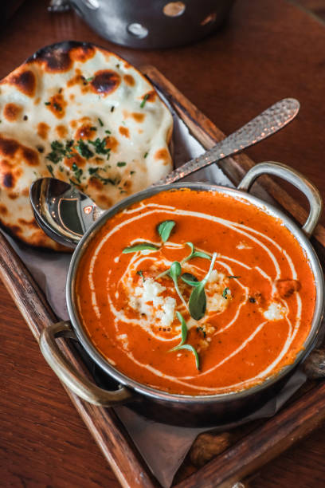
Ingredients:
- 500g boneless chicken
- 2 tbsp butter
- 1 cup tomato puree
- 1/2 cup cream
- 1 tbsp ginger garlic paste
- 1 tsp garam masala, 1 tsp chili powder, salt to taste
- 1/2 tsp turmeric, 1 tbsp kasuri methi (dried fenugreek leaves)
- 1/2 cup yogurt, 1 onion (chopped)
Cooking Process:
- Marinate chicken with yogurt, half the spices, salt, and ginger garlic paste for 30min+.
- Grill or pan-cook the chicken till cooked through.
- In a pan, heat butter, sauté onions, add tomato puree, cook till oil separates.
- Add remaining spices, kasuri methi, cream. Simmer for 5 min.
- Add chicken pieces, simmer 10 min, garnish with cream. Serve hot.
Chole Bhature – Punjab/Delhi
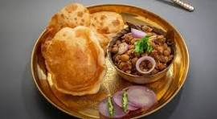
Ingredients:
- 1 cup dried chickpeas
- 2 onions, 2 tomatoes, 2 green chilies
- Spices: cumin, coriander, garam masala, amchur, turmeric, chili powder
- 2 cups all-purpose flour, 1/2 cup yogurt, oil (for frying)
Cooking Process:
- Soak and boil chickpeas. Sauté onions, tomatoes, spices, add chickpeas and simmer.
- Knead dough with flour, yogurt, rest 2 hrs. Roll and deep fry bhature.
- Serve chole with hot bhature and salad.
Dal Makhani – Punjab
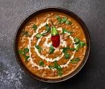
Ingredients:
- 1 cup whole urad dal (black lentils), 1/4 cup rajma (kidney beans)
- 2 tomatoes, 1 onion, ginger, garlic, green chili
- Butter, cream, cumin, garam masala, chili powder, salt
Cooking Process:
- Soak and pressure cook lentils/beans. Sauté onions, tomatoes, spices. Add cooked dal, simmer with butter and cream for 30+ min.
- Garnish with more cream. Serve with naan or rice.
Masala Dosa – Karnataka
Ingredients:
- 2 cups rice, 1/2 cup urad dal, 1/4 cup chana dal
- Salt, oil (for dosa)
- Potato masala: 4 potatoes, 1 onion, 2 green chilies, curry leaves, mustard seeds, turmeric
Cooking Process:
- Soak rice and dals overnight. Grind to smooth batter, ferment 8 hours.
- Cook potatoes, mash. Sauté onions, chilies, curry leaves, mustard seeds, turmeric, add potatoes.
- Heat tawa, pour batter, spread thin, drizzle oil, cook crisp.
- Put masala in center, fold and serve with chutney and sambar.
Mysore Pak – Karnataka

Ingredients:
- 1 cup besan (gram flour)
- 1 cup ghee, 1.5 cups sugar, 1/2 cup water
Cooking Process:
- Sift and roast besan in 1/4 cup ghee till aromatic.
- Make sugar syrup of 1 string consistency, add besan, stir continuously.
- Add remaining ghee in batches; cook till frothy and mixture leaves sides.
- Pour into greased tray, cool, cut into pieces.
Palak Paneer – North India
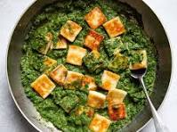
Ingredients:
- 250g paneer, 3 cups spinach (palak)
- 1 onion, 2 tomatoes, 2 green chilies, 1 tsp ginger garlic paste
- 1/2 tsp cumin, 1/2 tsp garam masala, 1/2 tsp chili powder, salt
Cooking Process:
- Blanch spinach, blend to puree.
- Sauté onions, chilies, ginger garlic paste, add tomatoes and cook till mushy.
- Add spinach puree, spices, cook 5 min. Add paneer cubes, simmer 3-4 min.
- Serve hot with naan or rice.
Rogan Josh – Jammu & Kashmir

Ingredients:
- 500g mutton/lamb
- 1 cup yogurt
- 2 onions, 1 tbsp ginger garlic paste
- Whole spices: bay leaf, cinnamon, cardamom, cloves
- 1 tsp Kashmiri chili powder, 1/2 tsp turmeric, 1 tsp fennel powder, salt
Cooking Process:
- Marinate mutton with yogurt, salt, and half the spices for 1 hour.
- Sauté whole spices and onions in oil, add ginger garlic paste.
- Add mutton, cook till browned. Add remaining spices, cook covered until meat is tender.
- Garnish and serve hot with steamed rice.
Khaman Dhokla – Gujarat

Ingredients:
- 1 cup besan (gram flour)
- 1 tbsp semolina (optional), 1 tsp lemon juice
- 1 tsp Eno (fruit salt), 1/2 cup water
- Salt, sugar, green chili, mustard seeds, curry leaves
Cooking Process:
- Mix besan, semolina, salt, lemon juice, water. Just before steaming, add Eno and mix well.
- Pour batter into greased tray, steam for 15-20 min.
- Temper with mustard seeds, curry leaves, green chili, pour over dhokla. Cut and serve.
Undhiyu – Gujarat
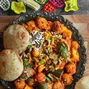
Ingredients:
- Mixed winter vegetables (yam, potatoes, green beans, brinjal, raw bananas, surti papdi)
- Methi muthia, coconut, coriander, ginger, green chili
- Groundnut oil, spices, sugar, lemon juice
Cooking Process:
- Prepare stuffed muthias, chop all vegetables.
- Layer veggies and muthias in a pressure cooker with masala paste.
- Cook till soft, garnish with coriander and coconut.
Hyderabadi Biryani – Telangana

Ingredients:
- 2 cups basmati rice, 500g chicken/mutton, 1 cup yogurt
- Whole spices: bay leaf, cloves, cinnamon, cardamom
- 2 onions, 2 tomatoes, mint, coriander, ginger garlic paste, saffron
- Chili powder, garam masala, salt
Cooking Process:
- Marinate meat with yogurt, spices, mint, coriander for 2 hours.
- Parboil rice with whole spices.
- Layer meat and rice, top with fried onions, saffron milk.
- Cook on dum (sealed pot) for 25-30 min. Serve hot.
Pesarattu – Andhra Pradesh
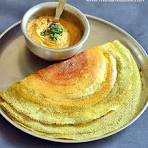
Ingredients:
- 1 cup whole green gram (moong dal)
- 2 green chilies, 1-inch ginger
- 1 onion, cumin, salt, oil
Cooking Process:
- Soak moong overnight. Blend with chilies, ginger, salt to a batter.
- Spread on hot tawa, sprinkle onions, drizzle oil, cook till crisp.
- Serve with chutney or upma.
Machher Jhol (Bengali Fish Curry) – West Bengal
.jpg)
Ingredients:
- 500g freshwater fish (Rohu/Katla)
- 2 potatoes, 2 tomatoes, 1 tbsp ginger paste
- Turmeric, red chili powder, cumin seeds, mustard oil, salt
Cooking Process:
- Marinate fish with salt & turmeric, shallow fry in mustard oil.
- Sauté cumin, ginger paste, sliced potatoes, tomatoes, spices.
- Add water, bring to boil, add fried fish, simmer till potatoes are cooked.
- Serve hot with rice.
Mishti Doi – West Bengal
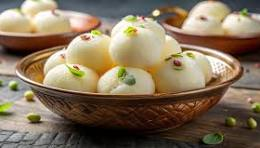
Ingredients:
- 1 liter milk, 1/2 cup sugar, 2 tbsp curd
Cooking Process:
- Boil and reduce milk to half, cool slightly.
- Caramelize sugar, mix into milk, cool to lukewarm.
- Add curd, set overnight in a warm place.
- Chill and serve.
Litti Chokha – Bihar

Ingredients:
- 2 cups whole wheat flour, 1 cup sattu (roasted gram flour)
- Mustard oil, ajwain, kalonji, salt, pickling spices
- Chokha: 2 eggplants, 2 tomatoes, 2 potatoes, green chili, onion, coriander
Cooking Process:
- Prepare dough with wheat flour, stuff with sattu mix, shape into balls.
- Bake/roast till golden. For chokha, roast veggies, peel, mash, mix with spices & onion.
- Serve litti with chokha and ghee.
Dal Baati Churma – Rajasthan

Ingredients:
- For Baati: 2 cups wheat flour, 1/2 cup ghee, salt
- For Dal: mixed lentils (toor, chana, moong), tomatoes, ginger, green chili, spice mix
- For Churma: whole wheat flour, ghee, sugar
Cooking Process:
- Make stiff dough, shape into balls, bake till golden.
- Cook dal with spices, temper with ghee & cumin.
- For churma, crush baatis, mix with ghee & sugar.
- Serve dal, baati, and churma together with extra ghee.
Ghevar – Rajasthan
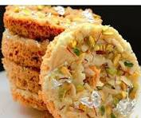
Ingredients:
- 2 cups all-purpose flour, 1/2 cup ghee, 1 cup chilled water
- 1/2 cup milk, 1 tsp lemon juice
- 2 cups sugar, 1 cup water, saffron, cardamom, nuts
Cooking Process:
- Make a thin batter. Pour batter in hot ghee in rings to form net structure.
- Fry till golden, drain. Dip in sugar syrup, top with saffron, nuts.
- Serve chilled or at room temperature.
Ven Pongal – Tamil Nadu

Ingredients:
- 1 cup rice, 1/4 cup moong dal
- 2 tbsp ghee, 1 tsp black pepper, 1 tsp cumin, cashews, curry leaves, ginger
- Salt, water
Cooking Process:
- Roast and cook rice with dal till soft and mushy.
- In ghee, fry cumin, pepper, cashews, curry leaves, ginger; add to cooked rice-dal mixture.
- Mix well, serve hot with coconut chutney and sambar.
Sambar – Tamil Nadu
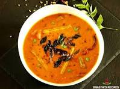
Ingredients:
- 1 cup toor dal (pigeon peas)
- Mixed vegetables (carrot, beans, drumstick, potato)
- 1 onion, 2 tomatoes, 2 green chilies
- Sambar powder, tamarind pulp, mustard seeds, curry leaves
Cooking Process:
- Cook dal till soft. Sauté onions, tomatoes, chilies, add vegetables and cook.
- Add tamarind pulp, sambar powder, cooked dal. Simmer for 10 min.
- Temper with mustard seeds and curry leaves. Serve hot with rice or idli.
Rasgulla – West Bengal
Ingredients:
- 1 liter milk
- 2 tbsp lemon juice/vinegar
- 1 cup sugar, 4 cups water
- Cardamom (optional)
Cooking Process:
- Boil milk, curdle with lemon juice, strain to get chenna (paneer).
- Knead chenna till smooth, shape into small balls.
- Boil sugar and water to make syrup, add chenna balls, cook till they expand and are cooked through.
- Cool and serve chilled.
Appam with Vegetable Stew – Kerala

Ingredients:
- For Appam: 2 cups raw rice, 1/2 cup cooked rice, 1/2 cup grated coconut, 1/2 tsp yeast, 2 tbsp sugar, salt
- For Stew: Mixed vegetables (carrot, potato, beans), 1 onion, 1 green chili, 1-inch ginger, 1 cup coconut milk, curry leaves, whole spices (cloves, cinnamon, cardamom), salt
Cooking Process:
- Soak raw rice for 4 hours. Grind with cooked rice and coconut to a smooth batter. Add yeast, sugar, salt, ferment overnight.
- For stew, sauté spices, onions, ginger, chili in oil. Add vegetables, cook till soft. Add coconut milk, simmer gently, season with salt.
- Make appams by pouring batter on a hot appam pan, swirling to spread thin edges, cook covered till done.
- Serve hot appams with vegetable stew.
Thekua – Bihar/Jharkhand
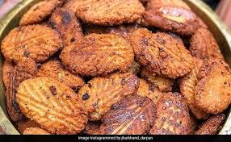
Ingredients:
- 2 cups whole wheat flour
- 1 cup jaggery (grated), 1/2 cup grated coconut
- 2 tbsp ghee, 1/2 tsp cardamom powder, water, oil for frying
Cooking Process:
- Melt jaggery in water, cool. Mix flour, coconut, cardamom, ghee, and jaggery water to make a stiff dough.
- Shape into discs, press with design, deep fry till golden brown.
- Cool and store in airtight container.
Ghugni – Bihar/Jharkhand/Uttar Pradesh
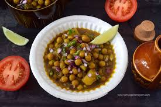
Ingredients:
- 1 cup dried yellow peas (or white peas)
- 1 onion, 1 tomato, 2 green chilies, ginger, garlic
- Spices: cumin, coriander, turmeric, chili powder, garam masala, salt
- Oil, lemon, coriander leaves
Cooking Process:
- Soak and boil peas till soft. Sauté onion, ginger, garlic, add tomatoes and spices.
- Add boiled peas, cook till thick. Garnish with lemon and coriander.
- Serve hot as snack or with roti.
Aloo Tikki Chaat – Uttar Pradesh

Ingredients:
- 4 boiled potatoes, 2 tbsp cornflour, salt, chili powder
- Chutneys: tamarind, green chutney
- Yogurt, chopped onions, sev, coriander, chaat masala
Cooking Process:
- Mash potatoes, mix with cornflour, salt, chili. Shape into tikkis, shallow fry till crisp.
- Top with chutneys, yogurt, onions, sev, coriander, and chaat masala.
- Serve immediately.
Chana Chaat – Punjab/Uttar Pradesh

Ingredients:
- 1 cup boiled chickpeas
- 1 onion, 1 tomato, 1 green chili, coriander leaves
- Lemon juice, chaat masala, salt, chili powder
Cooking Process:
- Mix chickpeas with chopped onion, tomato, chili, coriander.
- Add lemon juice, chaat masala, salt, chili powder. Toss well.
- Serve as a healthy snack.
Amritsari Kulcha – Punjab

Ingredients:
- 2 cups all-purpose flour, 1/2 cup yogurt, 1/2 tsp baking powder, salt
- Stuffing: 2 boiled potatoes, 1 onion, green chili, coriander, spices
- Butter/ghee for brushing
Cooking Process:
- Knead dough with flour, yogurt, baking powder, salt. Rest 2 hours.
- Prepare stuffing with mashed potatoes, onion, chili, coriander, spices.
- Stuff dough balls, roll, cook on tawa or bake till golden. Brush with butter.
- Serve hot with chole or raita.
Samosa – All India (Fast Food)
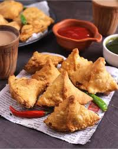
Ingredients:
- 2 cups all-purpose flour, 4 tbsp oil, salt, water
- Stuffing: 4 boiled potatoes, 1/2 cup peas, ginger, green chili, spices (coriander, cumin, garam masala, chili powder)
- Oil for frying
Cooking Process:
- Knead stiff dough with flour, oil, salt, water. Rest 30 min.
- Prepare stuffing with mashed potatoes, peas, spices.
- Roll dough, cut, fill with stuffing, shape into cones, seal edges.
- Deep fry till golden and crisp. Serve with chutney.
Pav Bhaji – Fast Food (Popular in North India)

Ingredients:
- 4 pav buns, 2 potatoes, 1 cup mixed vegetables (peas, carrot, cauliflower), 1 onion, 2 tomatoes
- Pav bhaji masala, butter, lemon, coriander, salt
Cooking Process:
- Boil and mash vegetables. Sauté onions, tomatoes, add veggies, pav bhaji masala, salt, butter. Cook till thick.
- Toast pav buns with butter.
- Serve bhaji with pav, lemon, and chopped onions.
Dahi Vada – Uttar Pradesh/Punjab (Fast Food)

Ingredients:
- 1 cup urad dal, 1/4 cup moong dal, salt, oil for frying
- Yogurt, tamarind chutney, green chutney, chili powder, cumin powder, chaat masala
Cooking Process:
- Soak and grind dals to a batter, add salt. Deep fry spoonfuls to make vadas.
- Soak vadas in water, squeeze gently, place in yogurt.
- Top with chutneys, spices, and serve chilled.
Masala Chai (Tea) – All India (Fast Food)
.jpg)
Ingredients:
- 2 cups water, 1 cup milk
- 2 tsp black tea leaves
- 2-3 tsp sugar (to taste)
- Spices: 2 green cardamoms, 1-inch ginger, 2 cloves, 1 small cinnamon stick, 4 black peppercorns
Cooking Process:
- Crush spices and ginger. Boil water with spices for 2-3 min.
- Add tea leaves, simmer 2 min. Add milk and sugar, boil for 2-3 min.
- Strain and serve hot.
Maggi Masala Noodles – All India (Fast Food)

Ingredients:
- 1 pack Maggi noodles (or instant noodles)
- 1.5 cups water
-

- 1 small onion, 1 small tomato, 1 green chili (optional)
- 1/4 cup mixed vegetables (peas, carrot, capsicum, optional)
Cooking Process:
- Heat oil, sauté onion, chili, tomato, and vegetables till soft.
- Add water, bring to boil. Add noodles and tastemaker.
- Cook till water is absorbed and noodles are soft. Serve hot.